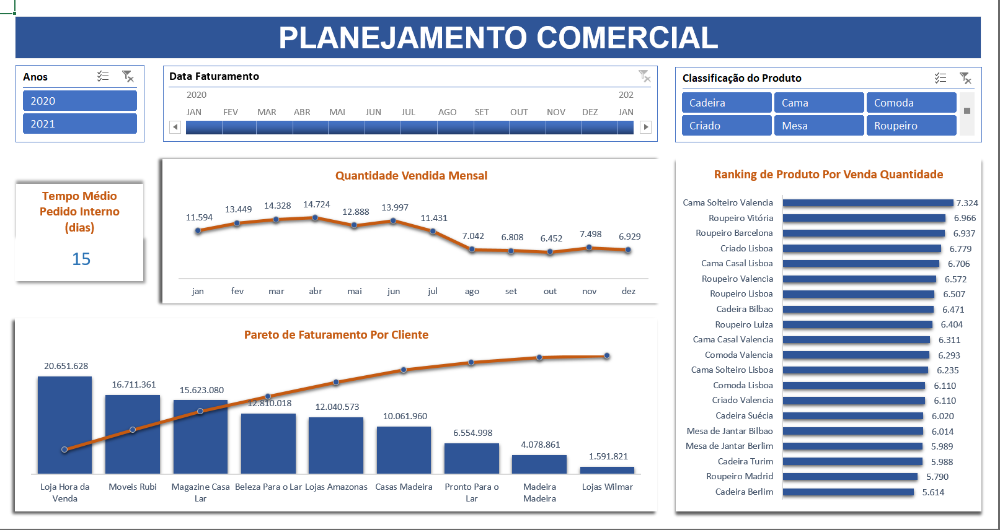
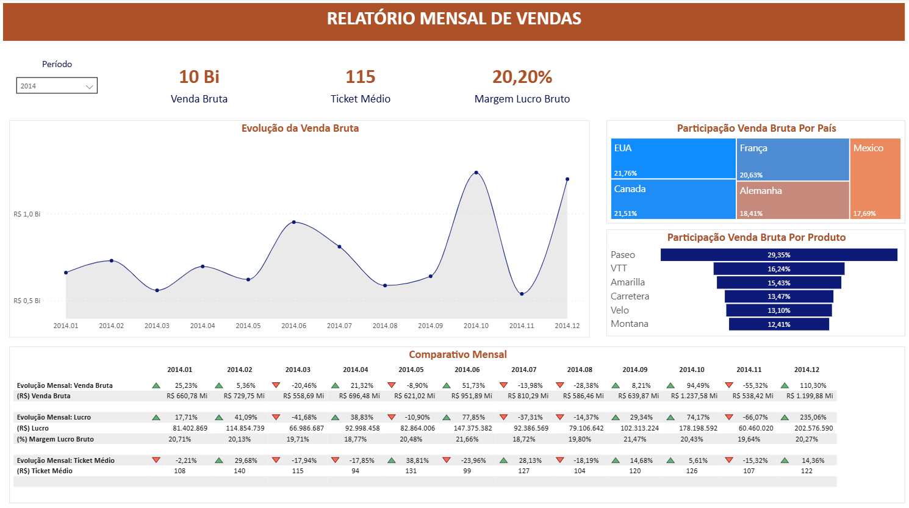
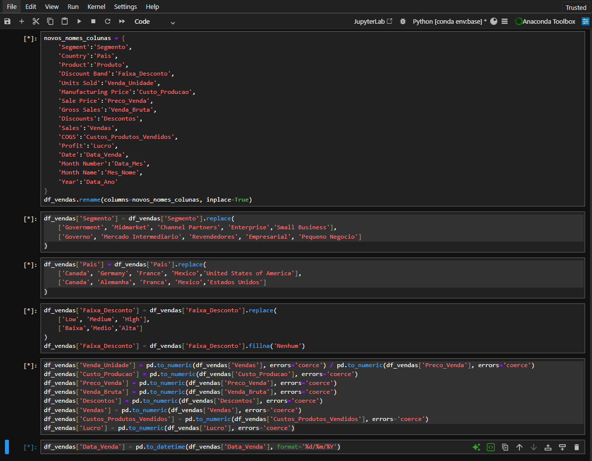

PROPÓSITO
A Análise de Faturamento tem por finalidade apresentar informações que esclareçam questões como:
- Qual foi o faturamento total da minha empresa?
- Qual é o percentual do faturamento para o Cliente Fidelidade?
- Qual é o percentual do custo com envio?
- Qual é a participação de vendas por produto?
- Qual é a evolução do meu faturamento?
CONTEXTO
A Análise de Faturamento apresenta a evolução dos produtos faturados entre os anos de 2020 e 2025.
Podemos observar que:
- O Faturamento total foi de R$ 4.385 Mil, tendo um equilibrio entre os canais de vendas: 49,8% do faturamento ocorreu por transações de lojas físicas e 50,2% por lojas online.
- Consideramos Cliente Fidelidade aquele público que realizou mais do que uma compra no decorrer de todo o histórico de faturamento.
Existe uma oportunidade de melhoria desse indicador, visto que apenas 22,6% do nosso faturamento é para esse público. - Das 04 transportadoras que temos contrato - FedEx, UPS, DHL e Royal Mail, temos uma maior participação da FedEx com 25,1%, sendo que o custo total com envio é de 18,9% do faturamento.
- A Caneca Branca teve uma melhor performance de vendas representando participação de 9,2% do faturamento totalstrong>.
- Observando todos os períodos, compreendemos uma queda constante no faturamentos nos meses de Fevereiro e Novembro, demonstrando ser um evento sazonal.
CONCEITOS
Como os dados foram tratados:
- Python: Os dados foram importados, padronizados através do Python, utilizando a biblioteca Pandas.
- Conexão via API: Utilizamos a importação dos dados do Kaggle via API
- Normalização: Identificamos um padrão para as vendas que não foram faturadas, sendo os campos ClienteID, Localizacao_CD em branco e Quantidade' menor que zero 0, classificando esses registros como não faturado.
PROPÓSITO
Entender a performance do negócio, identificar pontos de melhoria para tomada de decisão.
- Qual é o tempo médio de produção?
- Como as vendas estão performando?
- Quais produtos são mais requisitados pelos clientes?
- Quais clientes são os mais estratégicos para o faturamento da empresa?
CONTEXTO
O Relatório de Planejamento Comercial, apresenta dados de uma fábrica de móveis onde podemos observar que:
- O tempo do fluxo de trabalho são de 15 dias, ou seja, o tempo necessário para a produção do meu produto, desde o momento em que o pedido é registrado até a sua finalização e faturamento.
Esse indicador é importante para identificar possíveis gargalos no processo de produção, podendo ser desde falhas na comunicação até lentidão em sistemas ou problemas no parque de máquians. - Os meses de Março e Abril temos nossa melhor performance de vendas, tendo uma significativa queda a partir do mês de Maio.
É importante uma investigação para compreender se houve alguma mudança no mercado, problemas com o time de vendas ou perda de competitividade e assim aplicar um plano de ação para atingimento das metas. - Nosso produto de destaque em vendas é a Cama Solteiro Valencia
Esse ranking apresenta a venda individual de produtos. Uma análise voltada para a área de produtos pode explorar quais produtos tem uma maior procura em vendas em conjunto e qual a tendência do mercado para produtos com baixa procura. - A Loja Hora da venda é responsável por 20% do faturamento.
Esse indicador permite realizar uma análise para entender as possíveis ações de priorização de atendimento, programas de fidelização e otimização da equipe de vendas.
CONCEITOS
Como os Indicadores foram calculados:
- Tempo Médio Pedido Interno (dias): Média da diferença em dias da data da emissão do pedido até a data do faturamento do pedido.
- Quantidade Vendida Mensal: Soma da quantidade vendida agrupada por mês.
- Ranking de Produtos por Venda Quantidade: Soma da quantidade vendida agrupada por produto.
- Pareto de Faturamento Por Cliente: Soma do valor faturado agrupado por cliente, ordenado pela frequência acumulada.
DASHBOARD
Clique sobre a imagem para ampliá-la
PROPÓSITO
O sentido para a existência de um negócio é que, através da comercialização de seus produtos/serviços, seja possível a obtenção de lucros.
Acompanhar a evolução das vendas é de suma importância, visto que é possível observar qual a direção que o seu negócio está seguindo.
O Relatório Mensal de Vendas tem por finalidade apresentar informações que esclareçam questões como:
- Qual foi meu lucro?
- Onde está meu cliente?
- O que meu cliente está comprando?
- Com que frequência estou vendendo?
- Qual é a quantidade média que vendo por cliente?
CONTEXTO
O Relatório Mensal de Vendas apresenta a evolução das vendas de Bicicletas no decorrer do ano de 2014.
Podemos observar que:
- O Lucro Bruto foi de R$ 2.007 Milhões, o que representa uma Margem de 20,20%.
No Brasil a Média da Margem Bruta pode variar entre 15% e 40%, podendo assim observar que a Margem Bruta está dentro da Média Nacional. - Nossos clientes se concentram em 05 Países: Estados Unidos, Canadá, França, Alemanha e México, e a participação de Venda Bruta está uniformemente distribuída.
- O Produto com maior participação em Venda Bruta é a Bicicleta Paseo representando 29,35%, e com um Ticket Médio de R$ 114.
- Os meses de Julho, Outubro e Dezembro foram os meses que tivemos Picos de Vendas e o Novembro foi o mês de mais baixa venda.
- O Ticket Médio é de R$ 115, sendo a Bicicleta VTT com o maior valor de Ticket Médio R$ 127 e a Bicicleta Montana com o de menor valor R$ 105.
CONCEITOS
Como os Indicadores foram calculados:
- Venda Bruta: Soma de todas das vendas realizadas.
- Lucro Bruto: Soma da Venda Bruta (-) Soma dos Custos dos Produtos Vendidos.
- Margem Lucro Bruto: Soma do Lucro Bruto (-) Soma da Venda Bruta.
- Ticket Médio: Soma da Venda Bruta (/) Soma das Unidades Vendidas.
DASHBOARD
Clique sobre a imagem para ampliá-la
ETL - TRATANDO OS DADOS PARA UMA ANÁLISE DE QUALIDADE
É de suma importância tratar os dados antes de iniciar o desenvolvimento de um dashboard/relatório.
Remover espaços desnecessários, corrigir erros ortograficos, padronizar os valores de colunas categóricas, converter as variáveis para os tipos corretos são alguns exemplos de boas práticas que precisam ser aplicadas.
É possível também automatizar todo o processo, desde a subida do arquivo inicial em um ambiente na nuvem, sharepoint por exemplo, validar os nomes e quantidades de colunas, enfim, são inúmeras as possíbilidades.
O intuito aqui é demonstrar de forma simples a importância de tratar desde a tradução dos valores (quando necessário), até a remoção de campos desnecessários, proporcionando um arquivo de qualidade para as próximas etapas.
EXTRAÇÃO
As informações do Relatório Mensal de Vendas foram extraídas dos dados de amostra do Power BI e salvo em um arquivo no formato csv.
Utilizei a biblioteca Pandas para realizar o processo ETL
- Os dados foram carregado no Python através da função pd.read_csv
- Defino algumas inconsistências no arquivo csv, foi necessário o uso dos parâmetros: sep=';', engine='python', on_bad_lines='skip'
TRANSFORMAÇÃO
- Através da função .rename, realizei a tradução dos nomes das colunas.
- Os valores das linhas foram traduzidos através da função replace.
- A coluna 'Faixa de Descontos' possuia alguns valores nulos, que foram tratados através da função fillna preenchendo esses campos com a palavra "nenhum".
- A função pd.to_numeric foi importante na tratativa dos valores numéricos que haviam sido carregados como string.
- O Campo de data também foi tratado utilizando a função pd.to_datetime.
CARREGAMENTO
Os dados foram carregados no Power BI através do conector Script do Python
PROCESSO ETL
Clique sobre a imagem para ampliá-la
